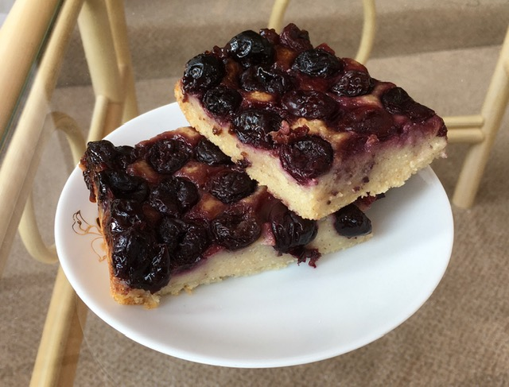

Cherry Tofu Pudding
Ingredients:
-
400g of Frozen Cherries
-
350g of Silken Tofu
-
3/4 Cup of Non-Dairy Milk
-
1/2 Cup of Sugar
-
1 Cup of Flour
-
3/8 Cup of Almond Flour
-
4 tsp of Cornstarch
-
25g of Vegan Butter + Extra for Pan
-
2 tsp of Vanilla Paste
-
A Pinch of Salt
-
1 tbsp of Disaronno Liquor

Method:
-
Pre-heat the oven.
-
Grease the baking dish with the vegan butter.
-
Blend the tofu with the plant milk together thoroughly.
-
Once blended, sieve in the sugar, flour, almond flour and cornstarch.
-
Melt the butter in the microwave.
-
Add the butter, vanilla, almond extract to the tofu mix.
-
Blend for 1-2 minutes to get a smooth consistency. Be careful not to whip too much air into the batter as it will cause the pudding to puff up.
-
Place all the cherries into the pan onto the bottom.
-
Pour the batter into the baking dish onto the cherries and spread it out evenly.
-
Sprinkle extra sugar lightly on top of the batter and put in the oven.
-
Bake for 40 minutes until puffed and golden.